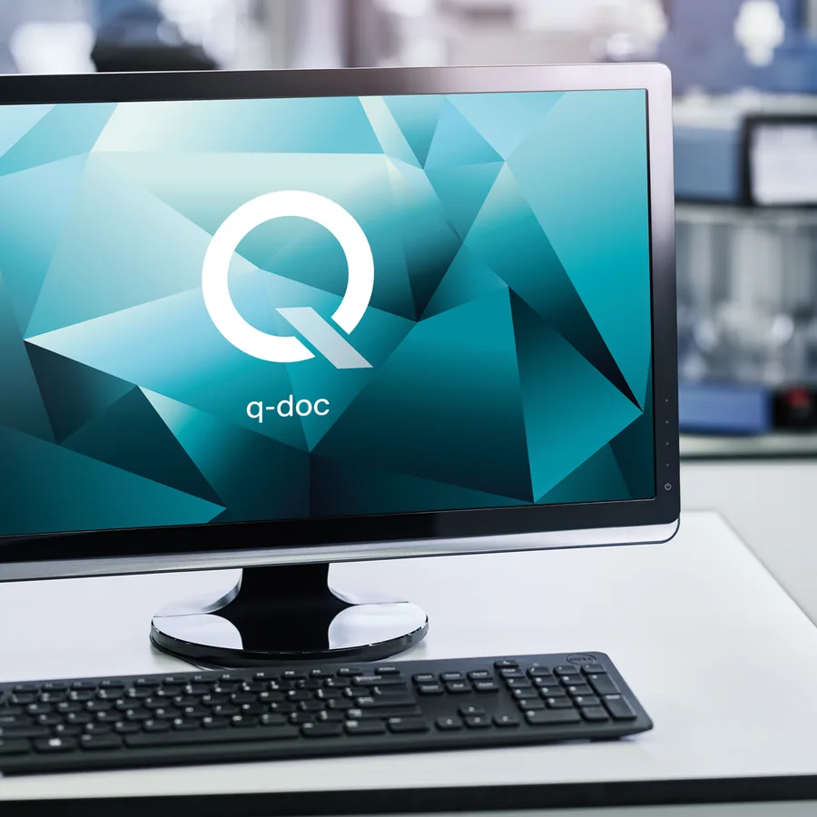

Equipamentos SOTAX
q-doc
Dados de dissolução e testes físicos · trilha de auditoriaDistribuidora oficial da SOTAX no Brasil desde 2021
Para que serve.
Software modular de gestão de dados de laboratório, para estação única ou rede, que integra instrumentos de dissolução e de testes físicos de várias marcas e guia os testes manuais passo a passo. Reúne métodos, resultados e usuários com trilha de auditoria legível, assinatura eletrônica e relatórios de lote, atendendo aos requisitos de um sistema 21 CFR Part 11.
Principais recursos.
- Mais de 40 tipos de instrumento integrados
- Trilha de auditoria legível e controle de versão
- Assinatura eletrônica e relatórios de lote
- Interfaces DataLink para LIMS, MES, ERP e Empower
- Banco MS-SQL central, arquitetura em 3 camadas
- Módulos: LDAP, exportação LIMS, tendências
Especificações técnicas.
| Especificação | q-doc |
|---|---|
| Arquitetura | 3 camadas, escalável, banco MS-SQL central |
| Drivers de instrumentos | mais de 40 tipos de instrumento |
| Sistema operacional (brochura 02.04) | Windows 10 / 11, Windows Server 2016, 2019; 32 e 64 bits |
| Banco de dados (brochura 02.04) | MS-SQL Express ou completo, versões 2012, 2014, 2016, 2019 |
| Memória RAM (brochura 02.04) | mínimo de 2 GB, recomendado 8 GB |
| CPU (brochura 02.04) | mínimo de 1,4 GHz, recomendado dual core ou quad core |
| Espaço livre em disco (brochura 02.04) | mínimo de 10 GB |
| Resolução de tela (brochura 02.04) | mínimo de 1280 x 1024, recomendado 1920 x 1080 |
| Portas de comunicação (brochura 02.04) | conforme os instrumentos e sistemas conectados |
Conformidade e normas.
21 CFR Part 11USP <701> e Ph. Eur. 2.9.1USP <905>USP <1217>Ph. Eur. 2.9.5
Downloads do fabricante.
Proposta
Quer ver o q-doc no seu método?
Conte a sua necessidade e o volume de amostras. Montamos a proposta com instalação, qualificação e treinamento.